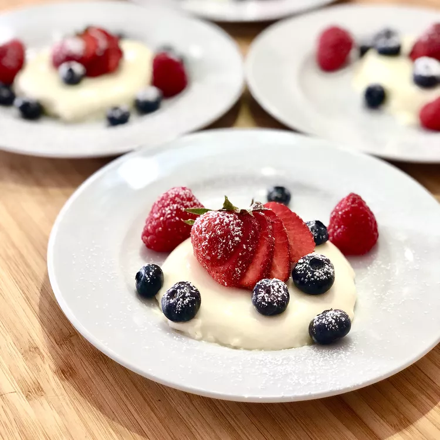

Panna Cotta

Description
Panna cotta to tradycyjny, łatwy i pyszny włoski krem.
Smakuje jak panna cotta serwowana we włoskich restauracjach.
Podawać z gorącym sosem krówkowym i świeżymi malinami na wierzchu.
Dobrze przechowuje się przez kilka dni w lodówce.
Ingrediens
- ⅓ szklanki mleka odtłuszczonego
- 1 żelatyna (0.25 uncji) (w proszku?)
- 2 ½ szklanki gęstej śmietany
- ½ szklanki białego cukru
- 1 ½ łyżeczki ekstraktu waniliowego
Steps
- Wlej mleko do małej miski.
Posyp żelatyną w proszku mleko i mieszaj, aż się połączy. Odłożyć na bok.
-
Wymieszaj gęstą śmietanę i cukier razem w rondlu.
Ustaw na średnim ogniu i zagotuj; uważnie obserwuj, jak krem może szybko bulgotać i kipieć.
- Natychmiast wymieszaj mieszaninę żelatyny z wrzącą śmietaną, mieszając,
aż do całkowitego rozpuszczenia. Gotuj i mieszaj przez 1 minutę.
- Zdejmij patelnię z ognia i wymieszaj z wanilią.
- Wlej kremową mieszankę do 6 pojedynczych miseczek.
Pozostaw do ostygnięcia, bez przykrycia, aż przestanie być ciepły, około 20 minut.
- Gdy ostygnie, przykryj folią spożywczą.
Przechowywać w lodówce do stężenia, co najmniej 4 godziny, ale najlepiej przez całą noc.